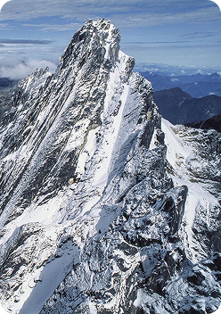
PapuaCarstensz Pyramid
4.884 mdpl
0 mdpl
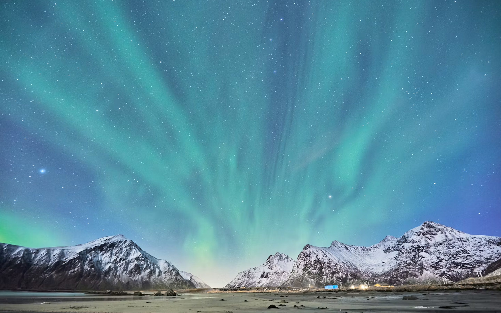
Seven summit of
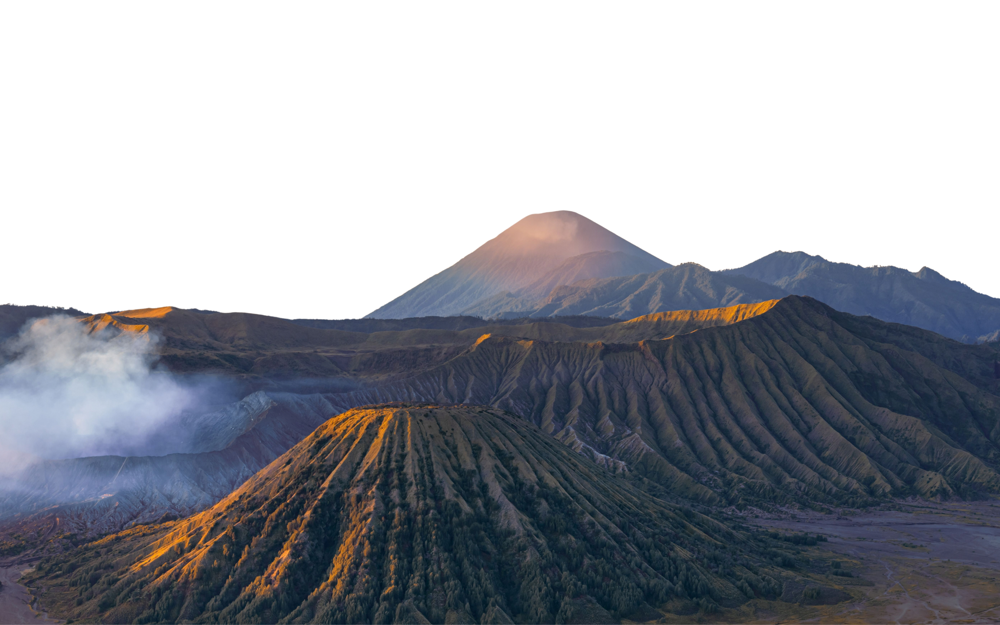
Jelajahi tujuh puncak tertinggi di tujuh pulau besar Indonesia, dari Papua sampai Kalimantan.
Scroll me02 — About Us
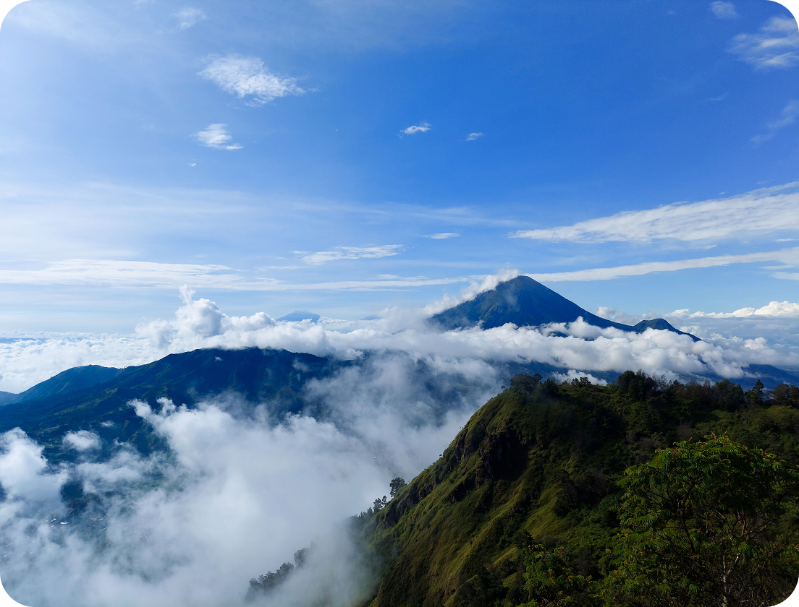
7Summit Indonesia hadir untuk mengajak para pendaki mengenal dan menjelajahi keindahan pegunungan Indonesia. Kami menghadirkan informasi dan pengalaman pendakian yang aman, berkesan, serta mengutamakan kebersamaan dan kelestarian alam.
Puncak Tertinggi
Di 7 pulau besar IndonesiaEkspedisi Sukses
Pendakian & trekking terpanduKomunitas
Pendaki berbagi cerita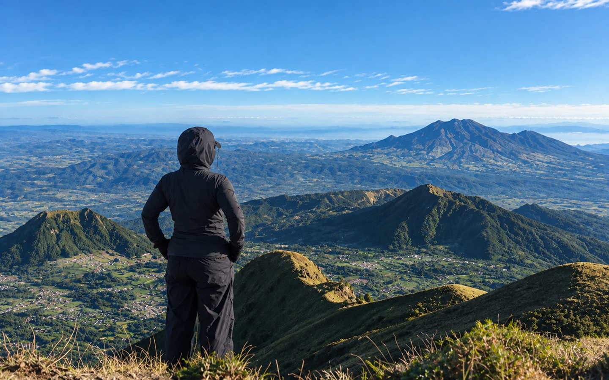
03 — Expeditions
Temukan keindahan puncak-puncak tertinggi Indonesia, di mana setiap jalur membawa pemandangan menakjubkan dan petualangan yang tak terlupakan.
Lihat Semua Puncak
Papua4.884 mdpl
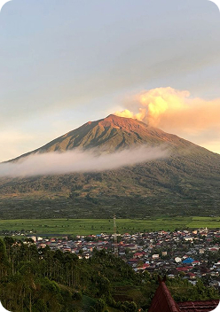
Sumatra Barat & Jambi3.805 mdpl
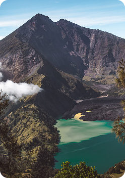
Nusa Tenggara Barat3.726 mdpl
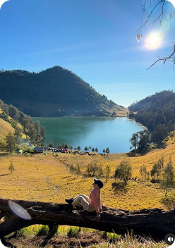
Jawa Timur3.676 mdpl
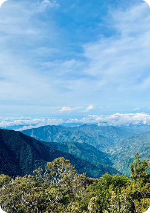
Sulawesi Selatan3.478 mdpl
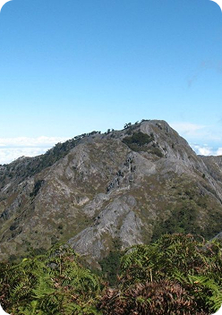
Maluku3.027 mdpl
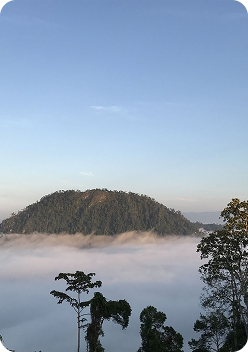
Kalimantan2.278 mdpl
Destinasi 01 / 07